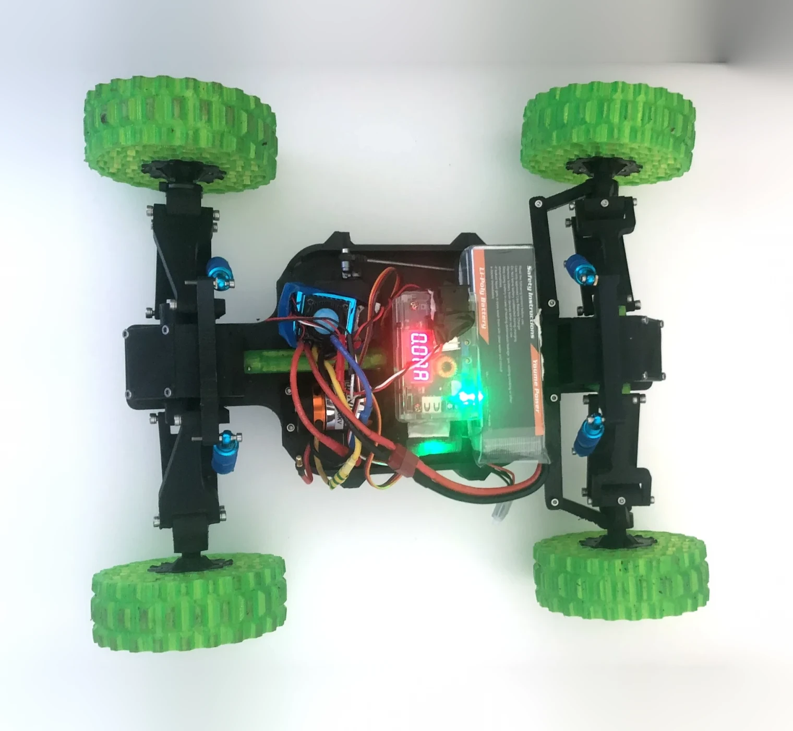
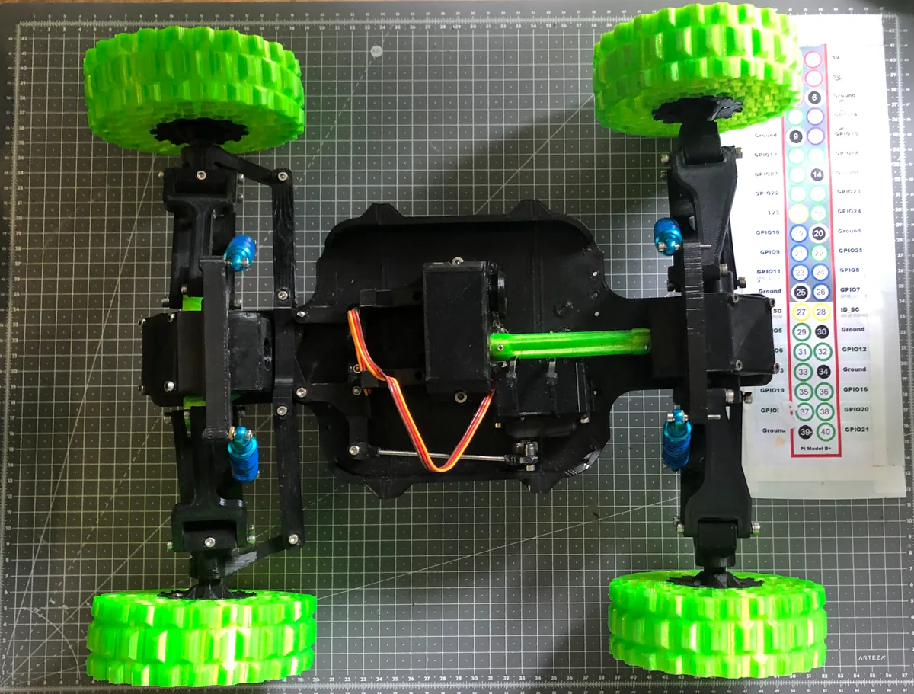
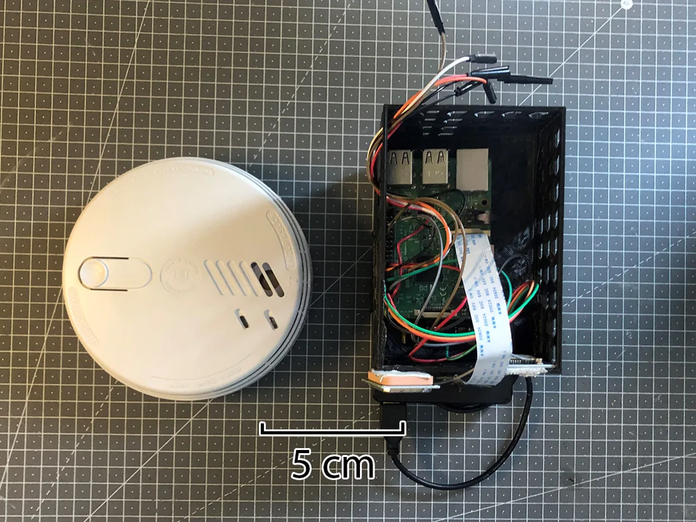
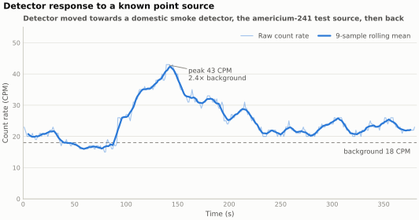
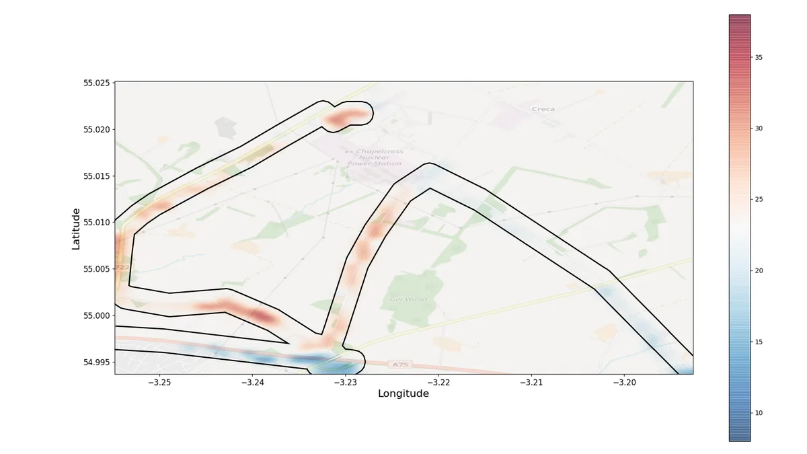
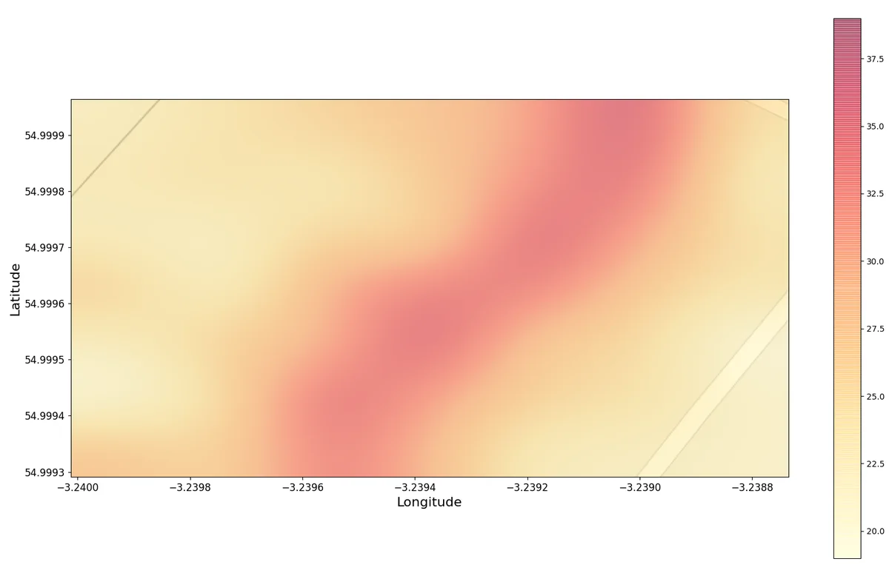

Telerobotics · Sensing
A rover for georeferenced radiation mapping
Commercial radiation telerobots are priced for national laboratories. This one is built from a Raspberry Pi, a Geiger tube and a 3D-printed chassis. Around Chapelcross it found a band of elevated count rate that matches a buried effluent pipeline the 2015 site survey doesn't record.

3D-printed tyre ESC and fan Motor Battery DamperThe problem
Radiation can't be seen or smelt, and the areas that need surveying are often unsafe to stand in for long. That makes the work suited to a telerobot. Commercial survey equipment is beyond the budget of a local authority, a university group or anyone wanting to check a site independently.
I aimed for a radiation monitoring telerobot that one person could build. The targets were a mobile platform under £150 of parts, a sensor unit under £200, and output a non-specialist could read. I followed an open-source methodology so someone else could rebuild it or use it for a different measurement.


The rover and the logger
The system is a rover and a detachable georeferenced radiation logger that rides on it. The logger is the part that has to be trustworthy, and keeping it separate means it can be characterised on its own. It can also be carried in a backpack or fixed to a car for surveys over open ground.
- Count rate and dose-rate estimate logged continuously, with every reading tagged to a GPS fix.
- Teleoperation with a Bluetooth games controller, relayed over 4G through a Raspberry Pi Zero, so range isn't limited by radio line of sight.
- An operator GUI in tkinter showing live first-person video and current count statistics.
- Interpolated heat maps as output, plus interactive maps of the underlying readings.
Latency and standoff
Driving through a video feed becomes difficult once the delay between input and picture is noticeable. The first working version was well over that threshold. Most of the engineering effort went into optimisation, which brought latency down to 0.11 s. At that level the operator no longer has to compensate for it. The rover was driven at distances over 300 metres.
Checking the detector responds
Before mapping, I checked the detector reacts to a source. A domestic smoke detector contains a small sealed americium-241 element, so I moved the sensor towards it and away again.

Into the field
Chapelcross was one of the earliest British nuclear power stations, running Magnox reactors from 1959 to produce electricity and weapons-grade plutonium-239. It has been in decommissioning since 2004, with work expected to continue past 2095. It now holds the last radioactive waste pond in Scotland.
Most of the site is rough ground. The platform had to take repeatable readings while crossing it.
I surveyed roughly three square kilometres around the perimeter, and separately around Southampton for a baseline of ordinary background.

The pipeline
One area read consistently higher than its surroundings, so I went back and mapped it in detail. I covered 3,600 square metres with a reading every four seconds, walking adjacent lines five metres apart. I used the interface to hold a constant line of latitude so the passes stayed straight.
The result was a band running diagonally across the survey area, at count rates 35 to 52 per cent above the surroundings. Contamination doesn't usually deposit in a straight line, so the shape suggested something buried underneath.

The 2015 survey of the site doesn't document anything on that line. A 2002 Radiological Habits Survey mentions an underground effluent pipeline whose route matches the band.
The 2002 survey used a gamma-only counter, so its readings are not directly comparable with the sensor unit's. It does report a 60 per cent reduction in dose rate moving south towards where the pipeline crosses the A75. The same trend appears in my data.
Validation
I had no dosimeter, so I could not establish the absolute accuracy of the Geiger counter directly. I could measure agreement and repeatability, which a survey map mostly depends on.
Against a comparable commercial unit, across 794 data points, the readings had a Spearman's rank correlation of 0.76. Precision was ±7.3 per cent of recorded dose rate. The sensor unit placed a reading within 8 metres of its true position 95 per cent of the time. The combined build cost of both devices was inside the £350 target, at around 28 per cent of the commercial equivalent.
It isn't accurate enough to certify a site as safe. It can show where a full survey should look.
← All projects